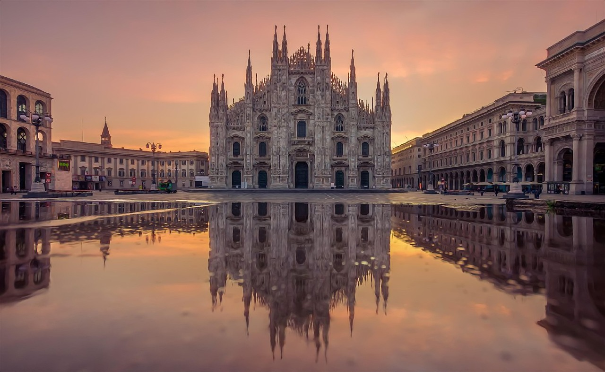
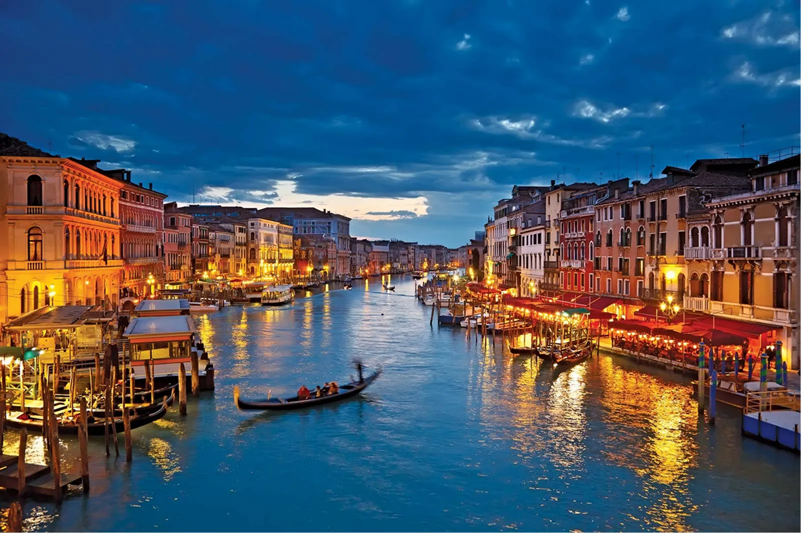
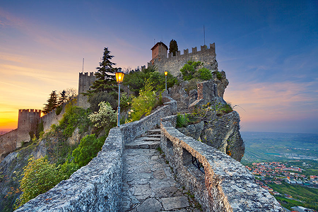
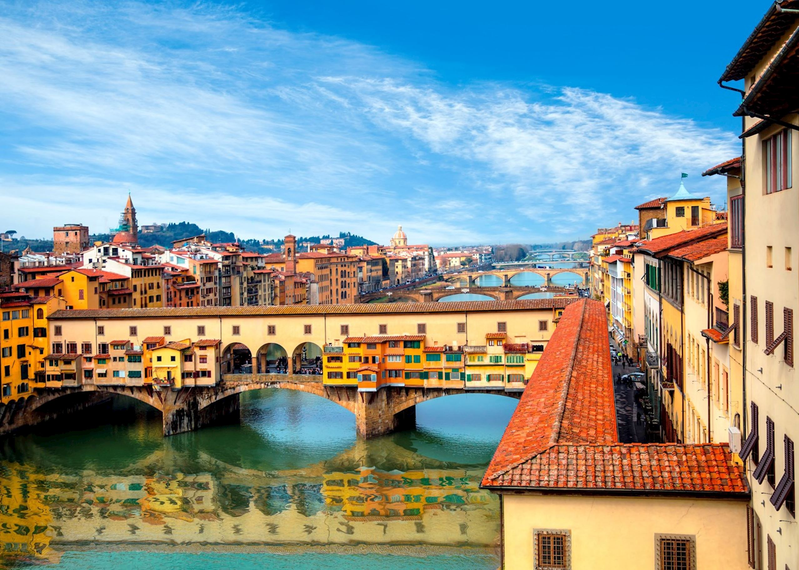
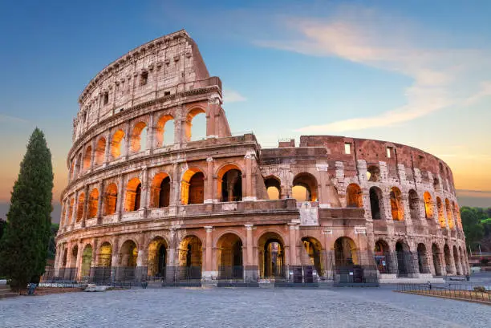
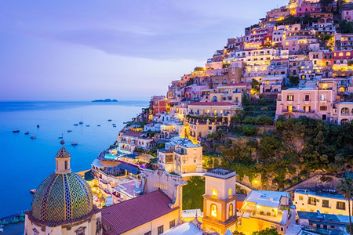
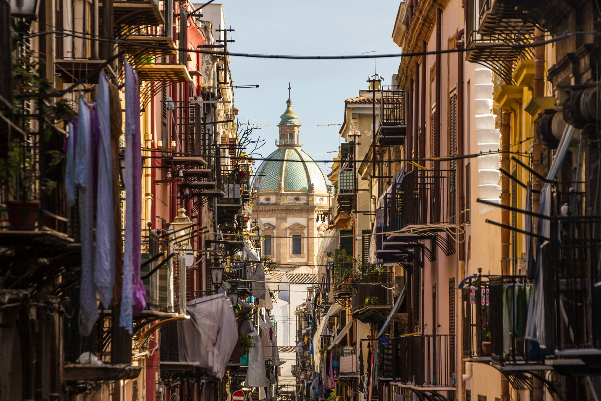

MILANO

ミラノは、イタリアの北部に位置する都市で、ファッションとデザインの中心地として知られています。歴史的な建築物や美術館も多く、観光客に人気のスポットです。
VENICE

ヴェネツィアは、イタリアの北東部に位置する水の都で、運河とゴンドラが特徴的な観光地です。歴史的な建築物や美術館も多く、ロマンチックな雰囲気が漂っています。
SAN MARINO

サン・マリノは、イタリアの内陸に位置する小さな共和国で、歴史的な城塞や美しい自然が特徴です。観光客に人気のスポットです。
FIRENZE

フィレンツェは、イタリアの中部に位置する都市で、ルネサンスの発祥地として知られています。美術館や歴史的な建築物が多く、観光客に人気のスポットです。
ROMA

ローマは、イタリアの首都で、古代ローマの遺跡やバロック様式の建築物が特徴です。歴史的な観光スポットが多く、世界中から訪れる観光客に人気の都市です。
NAPOLI

ナポリは、イタリア南部に位置する都市で、豊かな文化と美味しい食文化が特徴です。歴史的な建造物や海辺の風景も魅力的です。
PALERMO

パレルモは、イタリアのシチリア島に位置する都市で、豊かな歴史と文化が特徴です。美しい建築物や美味しい料理が魅力的な観光スポットです。